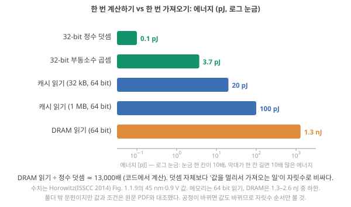
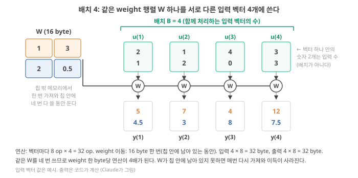
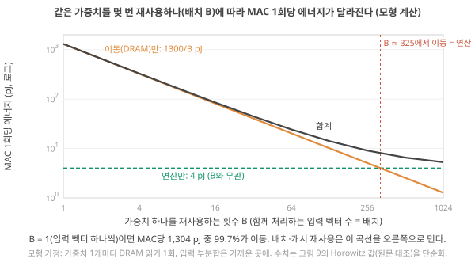
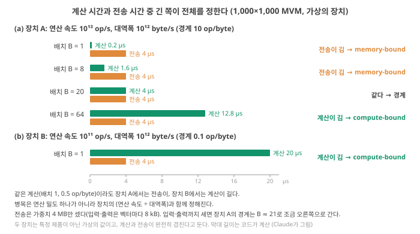
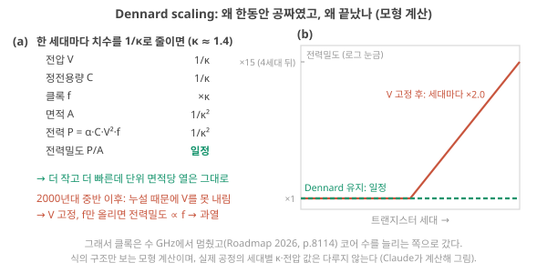
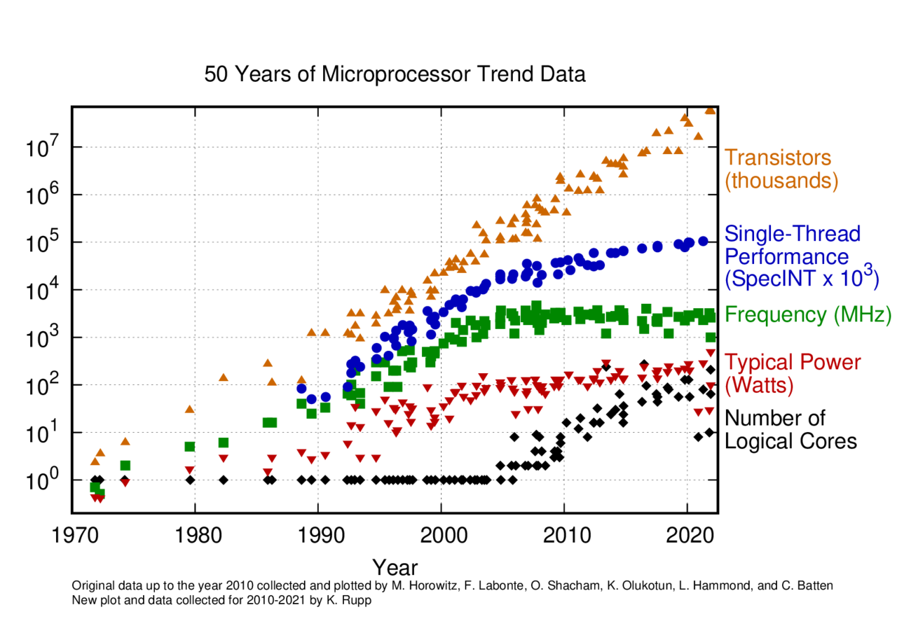
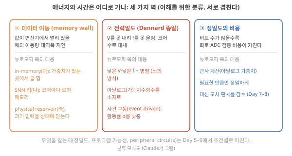

Day 4. 에너지와 시간은 어디로 가나: 메모리 벽과 Dennard scaling
Phase 1 · 왜 뉴로모픽 컴퓨팅인가
이번 질문 계산보다 데이터 이동이 비싼 이유는 무엇이고, 왜 더 빨리 돌리기만으로는 해결되지 않나?
왜 배우나 '이동이 없어 저전력' 문장을 이동 대 계산 비용 숫자로 평가한다.
오늘의 장면 연산량 op·이동량 byte → 연산 밀도 op/byte → 장치 op/byte와 비교 → 느린 쪽이 병목
오늘 반드시 RAM 읽기 한 번은 덧셈 한 번보다 약 10⁴배 비싸다(45 nm). op/byte를 비교하면 memory-bound인지 판단한다.
나중에 봐도 됨 타일링·낮은 정밀도 세부 · 실시간 장면 일곱 질문 · Dennard 표
이후 쓰이는 곳 Day 5–6 뇌–디지털 에너지 · Day 23–24 이완 시간 = 기억 · Day 31–32 시스템 에너지
지난 학습 복습
지난 학습 단위(Day 3 · 숫자·메모리·곱해서 더하기: 계산의 재료)의 핵심을 다른 예로 확인합니다. 고르는 즉시 맞았는지와 이유가 보입니다. 틀려도 아래 학습자료는 그대로 열려 있고, 틀린 문제에는 다시 볼 곳이 붙습니다.
학습자료
4. 에너지는 어디로 가나: 계산 한 번 vs 가져오기 한 번
상황. device 하나의 쓰기 에너지를 pJ 단위로 쟀다고 합시다. 논문은 "그러니 이 device로 만든 시스템도 저전력"이라고 쓰고 싶어 합니다. 그런데 그 device가 쓸 weight를 RAM에서 가져오는 에너지가 device 에너지보다 자릿수로 크다면 그 문장은 성립할까요?
왜 지금? device 하나의 에너지와 시스템 전체의 에너지는 다른 숫자입니다. 둘을 같은 단위(J)로 놓고 비교해야 "device가 싸다"는 말의 값을 알 수 있습니다.
어디에 쓰이나? 논문 초록의 fJ·pJ 숫자를 읽을 때, Day 31–32에서 시스템 에너지를 따질 때 씁니다.
끝나면 할 수 있는 것. 덧셈 한 번과 RAM 읽기 한 번의 에너지를 같은 단위로 비교하고, "device가 싸도 값이 멀면 소용없다"를 숫자로 설명합니다.
에너지와 전력, 그리고 pJ
한 줄 복습. 에너지 [J]는 일을 한 양, 전력 [W = J/s]는 1초당 쓰는 에너지입니다(에너지 = 전력 × 시간). 처음 설명은 에너지와 전력에 있고, 오늘 새로 쓰는 것은 아래 둘째 문단의 단위 접두어와 "연산당·접근당 에너지"입니다.
에너지와 전력의 차이 다시 펼치기 (Day 1–2 복습)
에너지는 일을 한 양이고 단위는 줄(J)입니다. 전등을 1초 켜는 것, 물을 데우는 것, 계산 한 번을 하는 것 모두 에너지로 잴 수 있습니다. 전력은 1초당 쓰는 에너지이고 단위는 와트(W = J/s)입니다. "이 전등은 10 W"는 1초에 10 J을 쓴다는 뜻입니다. 둘을 구별해야 하는 이유는 뒤(Day 5–6)에서 "뇌는 20 W"라는 말을 만날 때 분명해집니다. 20 W는 초당 쓰는 양이지, 어떤 일 하나에 드는 양이 아닙니다.
계산 한 번의 에너지는 아주 작아서 접두어를 씁니다. 1 pJ(피코줄) = 10⁻¹² J, 1 fJ(펨토줄) = 10⁻¹⁵ J = 0.001 pJ, 1 nJ(나노줄) = 10⁻⁹ J = 1,000 pJ. AA 건전지 하나(약 10 kJ)로 1 nJ짜리 일을 10¹³번 할 수 있습니다. "연산당 에너지"는 J/op, "접근당 에너지"는 J/access로, 둘 다 J이므로 서로 비교할 수 있습니다.
직관. 숫자 두 개를 더하는 데 드는 에너지와, 그 숫자를 창고(RAM)에서 가져오는 데 드는 에너지는 같은 단위(J)로 잴 수 있습니다. 재 보면 가져오기가 더하기보다 자릿수로 큽니다. 그러니 계산 하나하나를 아무리 싸게 만들어도, 값이 멀리 있으면 전체 에너지는 거의 줄지 않습니다.
그림 9 읽기 전에. 가로축은 에너지이고 로그 눈금입니다. 눈금 한 칸이 10배라서, 막대가 한 칸 더 길면 에너지가 10배입니다(읽는 법은 로그 축). 초록은 계산, 파랑은 칩 안 캐시에서 읽기, 주황은 RAM(DRAM)에서 읽기입니다. 값은 Horowitz가 반도체 회로 학회(ISSCC) 발표에서 "45 nm, 0.9 V"라는 조건으로 정리한 표입니다. 여기서 공정(process)은 칩을 만드는 제조 기술의 세대이고, '45 nm'는 그 세대의 이름입니다(대략 가장 작은 치수의 규모를 가리키던 꼬리표로, 요즘 세대의 이름은 실제 어느 한 치수와 정확히 같지 않습니다 미확인). 0.9 V는 공급전압(supply voltage) \(V_{DD}\)입니다. ★ 세대와 전압이 바뀌면 값도 바뀝니다. 또 같은 32 bit라도 정수(소수점 없는 수) 덧셈과 부동소수(앞에서 본 '32 bit 실수') 연산은 회로가 달라 에너지가 다릅니다. 같은 표에서 32 bit 정수 덧셈 0.1 pJ, 부동소수 덧셈 0.9 pJ, 부동소수 곱셈 3.7 pJ입니다. Horowitz 2014, p.14

작은 예시를 단계별로. 그림 9의 값을 그대로 쓰면 32 bit 정수 덧셈 0.1 pJ, RAM(DRAM) 64 bit 읽기 1.3 nJ = 1,300 pJ이므로 비율은 13,000배입니다 확인 (Horowitz 2014, 45 nm·0.9 V) Fig. 1.1.9, 원문 PDF 대조. 이제 앞에서 본 1,000×1,000 MVM(입력 벡터 하나, MAC 100만 번)에 적용합니다.
- 연산 에너지: MAC 1번을 32 bit 부동소수 곱셈 3.7 pJ + 덧셈(정수 0.1 pJ ~ 부동소수 0.9 pJ), 어림해 약 4 pJ로 잡으면(곱셈·덧셈 값은 Horowitz 표의 값이고, 둘을 4 pJ로 묶은 것은 어림값) Claude의 어림, 100만 번 × 4 pJ = 4,000,000 pJ = 4 µJ.
- 이동 에너지(최악): weight 하나를 읽을 때마다 RAM 읽기 1번(1,300 pJ)이 든다고 단순하게 잡으면, weight 100만 개 × 1,300 pJ = 1.3 mJ = 1,300 µJ. (원문의 RAM 값은 64 bit 단위라 32 bit weight 두 개가 한 번에 올 수 있습니다. 그렇게 세면 50만 번 × 1.3–2.6 nJ = 0.65–1.3 mJ로, 자릿수는 같습니다.)
- 비율: 1,300 ÷ 4 = 325. 위 괄호의 범위로 잡아도 160배 이상이라, 이동이 연산보다 두 자릿수 이상 큽니다.
- 캐시에서 읽을 수 있다면(1 MB 캐시의 64 bit 읽기 100 pJ, 같은 Horowitz 표) 100만 × 100 pJ = 100 µJ. RAM에서 읽을 때(1,300 µJ)의 13분의 1로 줄지만, 여전히 연산(4 µJ)의 25배입니다.
왜 가져오기가 이렇게 비싼가. 덧셈도 읽기도 결국 "전선의 전압을 바꾸는 일"인데 왜 10⁴배나 차이 날까요? 답은 Day 1의 CMOS 인버터에 이미 있습니다. 출력을 0에서 1로 바꾸려면 출력에 붙은 capacitance \(C_L\)을 충전해야 했고, 0 → 1 → 0을 한 번 하면 \(C_L V^2\)가 열이 됐습니다. 그런데 금속 배선도 그 자체로 capacitor입니다. 배선(도체)과 그 아래 실리콘·옆 배선(도체) 사이에 절연막이 끼어 있으니 Day 1의 capacitor와 같은 구조이고, 배선이 길수록 판이 넓은 셈이라 \(C\)가 커집니다. 값 하나(비트 수십 개)를 보낼 때마다 그 선들을 충방전해야 하므로, 멀리 보낼수록 에너지가 커집니다.
- 덧셈기 안: 선이 µm 단위로 짧습니다.
- 칩 안 캐시까지: mm 단위 배선과 큰 SRAM 배열의 긴 워드선·비트선을 지납니다. 앞의 에너지 막대그림에서 캐시가 클수록(32 kB → 1 MB) 비싼 이유입니다.
- RAM까지: 칩 밖으로 나가 보드 위 cm 단위 배선을 지나고, 칩과 칩 사이에서 신호를 주고받는 입출력 회로(I/O)와 DRAM 안의 감지 증폭기(sense amplifier)·새로 고침까지 거칩니다.
Horowitz도 DRAM 접근이 비싼 이유의 일부로 비트당 20 pJ이 넘는 비효율적인 입출력 회로를 들고, 입출력을 개선하더라도 요청과 데이터가 프로세서와 메모리 칩 위에서 먼 거리를 가야 하므로 여전히 비트당 약 10 pJ로 크다고 적습니다. Horowitz 2014, p.11 정리하면 '멀다'는 곧 '긴 배선의 큰 capacitance를 충방전한다'는 뜻입니다. 이것은 뒤의 Dennard scaling 구간의 \(P \approx \alpha C V^2 f\)에서 \(C\)가 배선 길이로 커지는 것과 같은 이야기입니다. 해석
적용 조건. 이 계산은 세 가지를 가정합니다. (1) weight가 재사용되지 않고 칩 안에 머물지도 않는다(입력 벡터 하나를 처리하고 끝, 뒤의 'memory wall' 구간에서 '배치(batch) 1'이라 부릅니다). (2) 입력과 중간 합은 가까운 층에 있다. (3) 수치는 특정 공정·전압의 값이다. ★ (1)이 깨지면, 즉 같은 weight를 많은 입력 벡터에 돌려 쓰면 이동 비용이 그 수로 나뉩니다. 이것이 GPU가 "배치"를 키우는 이유이고, 뒤의 'memory wall' 구간에서 그림으로 따라갑니다. 폴더의 리뷰들도 같은 말을 합니다. Roadmap은 데이터 이동을 "기존 전자 컴퓨팅의 주요 에너지 병목"이라 부르고 Roadmap 2026, p.8114, Kudithipudi 리뷰(Nature 2025)는 뉴로모픽의 첫 번째 이점을 "메모리와 연산이 밀접하게 결합되어 연산기와 메모리 사이의 비싼 데이터 전송을 피한다"로 듭니다. Kudithipudi 2025, p.801 둘 다 "피한다"가 아니라 "줄인다"로 읽어야 하는 이유는 마지막 '세 가지 벽' 구간에서 봅니다.
- 앞 막대그림 기준 RAM 읽기 ÷ 32 bit 정수 덧셈 ≈ 1.3×10⁴. 1 MB SRAM 읽기 ÷ 덧셈 ≈ 10³. 확인 (Horowitz 2014, 45 nm·0.9 V) Fig. 1.1.9, 원문 PDF 대조 2014년 공정의 값이라 오늘의 공정에서는 비율이 다를 수 있다.
- Roadmap은 GPT-3 한 모델의 학습 에너지가 미국 가정 수백 가구의 연간 소비와 맞먹는다고 적는다. Roadmap 2026, p.8103 이 숫자는 "학습"이고, inference(한 번 쓰기)과는 다른 양이다.
- 뇌 쪽 숫자(신경세포가 내는 짧은 전기 펄스인 스파이크로 정보 1 bit를 보내는 데 약 1–100 pJ 등 Aluru 2026, p.592)는 Day 5–6에서 조건과 함께 다룬다. 오늘 숫자와 나란히 놓고 비교하지 않는다.
내가 만드는 이온 device 하나의 쓰기 에너지가 "fJ"라고 논문에 적는다고 합시다. 그 device 100만 개의 값을 읽어 PC로 보내는 에너지는 얼마일까요? ADC(device의 아날로그 전류·전압을 숫자로 바꾸는 회로, 마지막 '세 가지 벽' 구간)와 케이블, PC가 쓰는 에너지를 더하면 fJ라는 숫자가 시스템에서 어떤 의미를 갖나요? (답은 Day 31–32에서. 오늘은 "device 에너지 ≠ 시스템 에너지"라는 질문만 적어 두세요.)
생각 정리 보기
자릿수만 어림한 예시 답입니다 [해석, 숫자는 설계마다 크게 다름]:
- Device 쪽: 1 fJ × 100만 개 = 1 nJ.
- ADC 쪽: 변환 한 번에 대략 pJ 수준이라고 두면, 100만 번이면 µJ 수준. 이미 device 쪽보다 약 1,000배 큽니다.
- 케이블로 PC까지 보내기: 칩 밖으로 bit를 보내는 데는 bit당 pJ–nJ 수준이 드는 경우가 많아 미확인, 100만 개 × 8 bit면 µJ–mJ 수준.
- 결론: 시스템 전체에서 fJ인 device 항은 아주 작은 한 줄입니다. 논문의 "fJ"는 device energy로 적고, 시스템 energy는 따로 세야 합니다(뒤의 Day에서 이 계산을 채웁니다).
- 에너지(J)는 일의 양, 전력(W)은 초당 에너지. 연산당 에너지(J/op)와 접근당 에너지(J/access)는 같은 단위라 비교할 수 있다.
- RAM 접근이 덧셈보다 약 10⁴배 크다(Horowitz 2014의 45 nm 값 확인; 자릿수가 요점). 1,000×1,000 MVM 한 번(입력 벡터 하나): 연산 4 µJ vs RAM 읽기 1.3 mJ (weight마다 RAM 읽기 1번으로 단순화한 어림, 325배).
- 왜: 배선도 capacitor라 길수록 \(C\)가 크다. 멀리 옮기면 긴 배선과 칩 사이 입출력 회로를 충방전해야 한다 Horowitz 2014, p.11 해석.
- 성립 조건: weight가 재사용되지 않고 칩 안에 머물지 못하는 계산(배치 1 + 큰 weight)에서 이동이 지배한다. 남은 질문: 재사용을 늘리면 어디까지 줄고, 시간은? → 다음 'memory wall' 구간.
5. 시간은 어디로 가나: memory wall과 재사용
상황. 같은 신경망을 GPU로 돌릴 때는 입력 1,000개를 모아 한꺼번에 처리하지만, 로봇 손가락의 센서 값은 1 ms마다 하나씩 옵니다.
왜 지금? 모을 수 있는 입력이 달라지면 같은 weight를 다시 쓰는 횟수가 달라지고, 병목의 위치가 바뀝니다. 이 판단을 숫자 두 개(연산 밀도, 장치의 op/byte)로 합니다.
어디에 쓰이나? 논문의 "batch 1", "real-time" 문장을 읽을 때, 내 device가 노리는 응용(Day 9)에서 병목이 어디인지 판단할 때 씁니다.
끝나면 할 수 있는 것. 앞의 2×2 예제로 연산 밀도(arithmetic intensity: 옮긴 1 byte당 연산 수)와 배치(batch: 함께 처리하는 입력 벡터 수)를 계산해 보입니다.
또 장치의 연산 속도·대역폭이 주어지면 어느 쪽이 시간을 정하는지 판단하고, '실시간 입력'을 구체적인 센서 장면으로 말합니다.
이 구간은 길어서 두 부분, 다섯 단계로 나눕니다. 앞부분 '병목 읽기': 연산 밀도 → 배치 → 계산 시간과 전송 시간(병목). 뒷부분 '설계 처방': 병목을 줄이는 세 방법(타일링·낮은 정밀도·배치) → 실시간 입력의 연구 장면. 두 부분 사이에서 쉬어도 됩니다. 앞의 2×2 예제의 숫자(8 op, 16 byte)를 끝까지 씁니다.
5-1. 옮긴 데이터 1 byte당 계산을 얼마나 하나: 연산 밀도
가져오기가 비싸다는 출발점. 앞의 에너지 구간에서 본 것처럼 계산 한 번보다 값을 멀리서 가져오는 한 번이 비쌉니다. 그렇다면 어떤 계산이 "가져오기에 휘둘리는지"는 데이터를 이만큼 옮겨 와서 계산을 얼마나 했는가로 가늠할 수 있습니다. 많이 옮기고 조금 계산하면 옮기는 쪽이, 조금 옮기고 많이 계산하면 계산하는 쪽이 비용을 정할 가능성이 큽니다.
2×2 예제의 두 숫자를 다시 짚기.
- 계산한 양: 2×2 예제에서 센 8 op(MAC 4번 × 2 op).
- 옮긴 양: 2×2 예제에서 센 weight 16 byte(weight 4개 × 4 byte). 여기서는 weight를 칩 밖 메모리에서 한 번 가져온다고 둡니다(입력·출력은 잠시 뒤에 셉니다).
나눗셈인 이유. 8 op와 16 byte는 단위가 달라 "어느 쪽이 크다"를 바로 말할 수 없습니다. 그래서 옮긴 양 1 byte당 계산이 몇 번인지로 바꿉니다. 자동차의 연비(km/L: 연료 1 L로 몇 km를 가나)와 같은 꼴입니다.
\[ \text{연산 밀도} = \frac{\text{연산량 [op]}}{\text{이동량 [byte]}} = \frac{8\ \text{op}}{16\ \text{byte}} = 0.5\ \text{op/byte} \]
가져온 weight 1 byte마다 연산 0.5번, 즉 weight 하나(4 byte)를 가져와 곱셈 한 번·덧셈 한 번(2 op)만 하고 끝낸다는 뜻입니다. 이 양의 정식 이름이 연산 밀도(arithmetic intensity)입니다. 이 값은 뒤에서 계산 시간과 전송 시간을 비교할 때 장치가 가진 같은 단위의 값(연산 속도 [op/s] ÷ 대역폭 [byte/s] = [op/byte])과 비교하는 데 쓰입니다.
문헌은 이 양을 arithmetic intensity, 연산 강도, 연산 집약도 등으로 부릅니다. 이 교재에서는 모두 연산 밀도 [op/byte]로 통일합니다. 다른 문헌에서 "연산 밀도"가 칩 면적당 연산 수(op/s/mm²)를 뜻하기도 하는데, 그 뜻으로는 쓰지 않습니다.
크기를 키워도 같다. 1,000×1,000이면 연산량 2×10⁶ op, weight 이동량 4×10⁶ byte로 밀도는 역시 0.5입니다. 입력 수 \(N\)을 아무리 키워도 weight 하나를 가져와 곱셈 한 번, 덧셈 한 번만 하고 버리기 때문입니다(손계산에서 본 "한 번씩만").
분모는 어디와 어디 사이의 이동인가. 값은 여러 층을 거쳐 옵니다(DRAM → L3·L2 → L1 → 레지스터, 앞의 계층 그림). 연산 밀도는 어느 두 층 사이의 이동을 분모로 쓰느냐에 따라 값이 달라집니다. 이 교재에서는 따로 말하지 않으면 칩 밖 주기억장치(DRAM)와 칩 안(캐시·레지스터) 사이를 오간 byte를 분모로 씁니다. 앞의 에너지 구간에서 본 것처럼 이 길이 가장 비싸고, 뒤에서 계산 시간과 전송 시간을 비교할 때 쓸 대역폭도 이 길의 대역폭이기 때문입니다. 해석
저장 크기와 실제 이동량은 같을 수도, 다를 수도 있다. 앞의 16 byte는 weight가 차지하는 칸(저장 크기)입니다. 분모는 실제로 옮긴 양(이동량)입니다. 둘은 이런 조건에서 갈립니다.
- 같다: weight를 DRAM에서 정확히 한 번 읽어 칩 안에서 쓰고 끝낼 때. 위의 0.5 op/byte가 이 경우입니다.
- 이동이 더 작다: 지난번 계산에서 쓴 weight가 아직 칩 안(캐시)에 남아 있으면 이번에는 DRAM에서 가져올 것이 없습니다. 16 byte짜리 2×2 weight는 레지스터·캐시에 계속 둘 수 있을 만큼 작습니다.
- 이동이 더 크다: 칩 안 저장소가 작아 같은 weight를 계산 도중에 몇 번씩 다시 읽어야 하면, 이동량이 저장 크기의 여러 배가 됩니다(뒤의 타일링(tiling) 예).
Weight만 셀 때와 입력·출력까지 셀 때. 지금까지는 weight 이동만 셌습니다. 그러나 입력 벡터도 가져와야 하고 출력 벡터도 내보내야 합니다. 2×2 예제에서 입력 숫자 2개 = 8 byte, 출력 숫자 2개 = 8 byte입니다.
| 예제 (입력 벡터 1개) | 연산량 | Weight 이동 | 입력 + 출력 이동 | 밀도 (weight만) | 밀도 (모두) |
|---|---|---|---|---|---|
| 2×2 | 8 op | 16 byte | 8 + 8 = 16 byte | 8 ÷ 16 = 0.5 | 8 ÷ 32 = 0.25 |
| 1,000×1,000 | 2×10⁶ op | 4×10⁶ byte | 4,000 + 4,000 = 8,000 byte | 0.5 | 2×10⁶ ÷ 4,008,000 ≈ 0.499 |
작은 2×2에서는 입력·출력 이동(16 byte)이 weight 이동(16 byte)과 같은 크기라서, weight만 센 0.5는 실제 전체 밀도(0.25)의 두 배입니다. 반대로 1,000×1,000에서는 weight가 \(N \times N\) = 100만 개, 입력·출력은 \(N\) = 1,000개씩이라 weight가 압도적이고, weight만 세도 거의 같습니다(0.5 vs 0.499). 그래서 큰 층에서는 weight 이동만 세는 단순화를 쓰고, 작은 예제의 0.5는 "weight만 센 값"이라고 읽어야 합니다.
5-2. 같은 weight를 여러 입력 벡터에: 배치
배치의 뜻. 배치(batch)는 같은 weight 행렬 \(W\)로 함께 처리하는 입력 벡터(샘플)의 개수입니다. 입력 벡터 하나 안의 숫자 개수(2×2 예제의 2, 1,000×1,000의 1,000)가 아닙니다. 그것은 층의 입력 수 \(N\)이고, 배치는 그런 벡터가 몇 개 모였느냐입니다. 기호는 \(B\)를 씁니다(첫 실습의 전송 속도 \(s\)와 다른 기호이고, 단위 byte와도 다릅니다).
무엇을 볼지. 그림 10은 같은 \(W\) 하나와 서로 다른 입력 벡터 4개를 나란히 놓은 것입니다. 가운데 row의 W 동그라미가 모두 같은 표라는 점, 각 열 안의 숫자 2개는 입력 수이고 열의 개수 4가 배치라는 점을 보세요.

- \(W\)(16 byte)를 칩 밖 메모리에서 한 번 가져와 칩 안에 둡니다.
- 입력 벡터 u(1) = (2, 1)에 \(W\)를 곱해 y(1) = (5, 4.5). 앞의 손계산 그대로입니다.
- 같은 \(W\)로 u(2) = (1, 2) → (7, 3), u(3) = (4, 0) → (4, 8), u(4) = (3, 3) → (12, 7.5). Weight를 새로 가져오지 않고 칩 안의 것을 네 번 씁니다.
- Weight 하나가 입력 벡터 4개에 한 번씩, 모두 4번 쓰였습니다. 이것이 재사용(reuse)입니다.
배치 1과 배치 4를 표로. 2×2 예제, 숫자 하나 4 byte, \(W\)가 칩 안에 남아 있는 동안 네 벡터를 처리한다고 가정합니다.
| 배치 1 (벡터 1개) | 배치 4 (벡터 4개) | |
|---|---|---|
| 연산량 | 8 op | 8 × 4 = 32 op |
| Weight 이동 | 16 byte | 16 byte (한 번) |
| 입력 이동 | 8 byte | 4 × 8 = 32 byte |
| 출력 이동 | 8 byte | 4 × 8 = 32 byte |
| 연산 밀도 (weight만) | 8 ÷ 16 = 0.5 | 32 ÷ 16 = 2 |
| 연산 밀도 (모두) | 8 ÷ 32 = 0.25 | 32 ÷ 80 = 0.4 |
| 참고: 배치 4인데 W를 벡터마다 다시 가져오면 | — | Weight 이동 4 × 16 = 64 byte, 밀도(weight만) 32 ÷ 64 = 0.5 |
Weight만 세면 배치 4가 밀도를 4배(0.5 → 2) 올립니다. 그러나 2×2처럼 작은 층에서는 입력·출력 이동이 배치 수만큼 함께 늘어나므로, 모두 세면 0.25 → 0.4로 덜 오릅니다. 배치는 weight 이동을 여러 벡터에 나눠 줄 뿐, 벡터마다 따로인 입력·출력 이동은 줄이지 못하기 때문입니다.
"weight를 한 번만 가져온다"는 어느 층 기준이고, 언제 가능한가. 여기서 '한 번'은 칩 밖 DRAM에서 칩 안(캐시·레지스터)으로 가져오는 횟수입니다. 칩 안에서 연산기 옆 레지스터로 옮기는 일은 벡터마다 여전히 일어납니다. 그리고 이 '한 번'은 세 조건이 맞을 때만 됩니다.
- 함께 처리할 벡터들이 그때 다 있어야 한다. 네 벡터가 동시에 준비돼 있거나, 기다렸다 모을 수 있어야 합니다(뒤의 실시간 센서 장면).
- 칩 안에 W를 둘 자리가 있어야 한다. 16 byte는 쉽지만 4 MB는 캐시 크기에 따라 못 들어갈 수 있습니다. 못 들어가면 표를 조각내는 타일링이 필요합니다(뒤의 설계 처방).
- 네 벡터를 처리하는 동안 W가 밀려나지 않아야 한다. 다른 데이터가 캐시를 차지해 W가 밀려나면 다시 가져와야 하고, 그러면 표의 마지막 줄처럼 이득이 사라집니다.
예제를 일반식으로. 작은 예제를 일반화합니다. 입력 \(N\)개 → 출력 \(N\)개 층(숫자 하나 4 byte)에서 배치 \(B\)면 연산량은 \(2N^2 B\) op, weight 이동은 \(4N^2\) byte(한 번), 입력·출력 이동은 \(8NB\) byte입니다.
\[ \text{weight만 센 밀도} = \frac{2N^2B}{4N^2} = 0.5B, \qquad \text{모두 센 밀도} = \frac{2N^2B}{4N^2 + 8NB} \]
- 확인: \(N = 2,\ B = 4\)면 \(32/(16+64) = 0.4\)로 위 표와 같습니다. \(N = 1000,\ B = 4\)면 \(8\times10^6/(4\times10^6 + 32{,}000) \approx 1.98\)로 \(0.5B = 2\)에 가깝습니다.
- 뜻: weight가 압도적인 큰 층(\(N\)이 \(2B\)보다 훨씬 클 때)에서는 배치 \(B\)가 밀도를 거의 \(B\)배 올립니다. \(B\)가 커져 입력·출력 이동이 weight 이동에 가까워지면 \(0.5B\)보다 덜 오릅니다.
에너지로 보면. 앞의 에너지 숫자로 같은 재사용을 그리면 그림 11입니다. Weight 하나를 DRAM에서 읽는 에너지(1,300 pJ)가 \(B\)개의 입력 벡터에 나뉘므로 MAC 한 번당 이동 에너지는 \(1300/B\) pJ로 줄고, \(B \approx 325\)에서 연산 에너지(4 pJ)와 같아집니다.

5-3. 계산 시간과 전송 시간: 어느 쪽이 병목인가
Memory wall이라는 말. 창고에서 재료를 가져오는 길이 좁으면(대역폭(bandwidth)이 낮으면), 요리사가 아무리 빨라도 재료를 기다립니다. 연산 속도는 해마다 빨라졌는데 메모리 대역폭과 지연은 그만큼 빨라지지 않아, 연산기가 메모리를 기다리는 일이 벽처럼 느껴진다는 뜻에서 이것을 memory wall이라 부릅니다. 미확인 원문 미대조 첫 실습에서 손으로 바꿔 본 "긴 쪽이 전체를 정한다"를 이제 실제 단위로 씁니다.
두 시간을 따로 구한다.
- 계산 시간 = 연산량 [op] ÷ 연산 속도 [op/s]. 연산 속도는 장치가 1초에 할 수 있는 연산 수입니다.
- 전송 시간 = 이동량 [byte] ÷ 대역폭 [byte/s]. 대역폭은 DRAM–칩 사이 길이 1초에 옮길 수 있는 양입니다(값이 연산기까지 오는 길 구간).
둘이 겹쳐서 진행된다면(다음 값을 가져오는 동안 앞 값을 계산) 전체 시간은 긴 쪽입니다.
\[ t \approx \max\!\left(\frac{\text{연산량}}{\text{연산 속도}},\ \frac{\text{이동량}}{\text{대역폭}}\right) \]
- 왜 지금 필요한가: "계산이 오래 걸린다"가 연산기 탓인지 메모리 탓인지를 한 줄로 가르기 위해.
- 기호: \(\max\)는 둘 중 큰 쪽. 두 항 모두 단위는 초(s)입니다.
- 계산 순서: 계산 시간과 전송 시간을 각각 구하고, 큰 쪽을 고른다(둘은 겹쳐서 진행된다고 가정).
- 결과의 뜻: 전송 시간이 길면 연산기가 데이터를 기다립니다. 이 상태가 메모리 병목(memory-bound)입니다. 계산 시간이 길면 데이터는 제때 오는데 연산기가 바쁩니다. 이 상태가 계산 병목(compute-bound)입니다. 해석 roofline 모형(Williams 2009)을 시간으로 바꿔 쓴 단순화입니다. 서지만 확인
숫자로 따라가기 — 장치 A. 가상의 장치 하나를 정합니다. 연산 속도 10¹³ op/s(초당 10조 번), 메모리 대역폭 10¹² byte/s(초당 1조 byte = 1 TB/s). 계산은 앞에서 본 1,000×1,000 MVM이고, 배치만 바꿔 봅니다. 이동량은 weight만 셉니다(큰 층이라 연산 밀도 절에서 본 대로 거의 같습니다). 예시 값이며 특정 제품이 아닙니다. 첫 실습과 같은 계산을 실제 단위로 한 것입니다.
배치 1. 계산 시간: 2×10⁶ op ÷ 10¹³ op/s = 2×10⁻⁷ s = 0.2 µs. 전송 시간: 4×10⁶ byte ÷ 10¹² byte/s = 4×10⁻⁶ s = 4 µs. 긴 쪽은 전송이므로 \(t \approx\) 4 µs, memory-bound. 연산기는 4 µs 중 0.2 µs, 즉 5%만 일하고 나머지는 기다립니다.
배치 8. W가 칩 안에 남아 있다면(배치 절의 조건, 곧 weight가 칩 안에 남는 경우) weight는 한 번만 가져오므로 전송은 그대로 4 µs. 연산량은 8배인 1.6×10⁷ op → 1.6 µs. 아직 전송이 기니 \(t \approx\) 4 µs이지만, 같은 4 µs에 입력 벡터 8개를 처리했고 연산기가 일한 비율은 40%로 올랐습니다.
배치 20. 연산량 4×10⁷ op → 4 µs, 전송 4 µs. 두 쪽이 같아집니다. 이때 연산 밀도는 0.5 × 20 = 10 op/byte이고, 이것은 정확히 연산 속도 ÷ 대역폭 = 10¹³ ÷ 10¹² = 10 op/byte입니다. (입력·출력 이동, 벡터마다 8 kB × 20개 = 160 kB를 더하면 전송이 4.16 µs로 조금 길어져, 실제 경계는 배치 약 21입니다.)
배치 64. 연산량 1.28×10⁸ op → 12.8 µs, 전송 4 µs(입력·출력을 더해도 약 4.5 µs). 이제 계산이 기니 \(t \approx\) 12.8 µs, compute-bound. 입력 벡터 하나당 시간은 12.8 ÷ 64 = 0.2 µs로, 배치 1(벡터 하나당 4 µs)의 20분의 1입니다.
정리. 경계선은 장치의 연산 속도 ÷ 대역폭 [op/byte]입니다. 계산의 연산 밀도가 이보다 낮으면 전송이, 높으면 계산이 시간을 정합니다. 장치 A에서 배치 1 MVM(0.5 op/byte)은 경계(10 op/byte)보다 20배 낮아 memory-bound입니다. 아래 영상의 roofline 그림에서 선이 꺾이는 점이 이 경계입니다.
같은 계산, 다른 장치 — 장치 B. 이번에는 연산 속도가 100배 느린(10¹¹ op/s) 장치 B에 대역폭은 같다(10¹² byte/s)고 합시다. 배치 1 MVM의 전송 시간은 그대로 4 µs이지만 계산 시간은 2×10⁶ ÷ 10¹¹ = 2×10⁻⁵ s = 20 µs라서 이번에는 계산이 긴 쪽(compute-bound)입니다. 장치 B의 경계는 10¹¹ ÷ 10¹² = 0.1 op/byte이고, 배치 1 MVM의 0.5 op/byte는 이 경계보다 높습니다. 그림 12의 (a)와 (b)가 두 장치를 같은 눈금으로 나란히 보여 줍니다.

정리. 병목은 계산의 연산 밀도 하나만으로 정해지지 않습니다. 장치마다 경계(연산 속도 ÷ 대역폭. Roofline 그림에서 선이 꺾이는 점이라 ridge point라고도 합니다)가 다르고, 계산의 연산 밀도가 장치의 경계보다 낮으면 memory-bound, 높으면 compute-bound입니다. 그래서 "배치 1 MVM은 memory-bound다"는 "연산 속도에 비해 대역폭이 좁은 장치, 즉 경계가 0.5 op/byte보다 높은 장치에서, 그리고 weight가 칩 안에 머물지 못할 때"라는 조건이 붙은 문장입니다. 연산기를 아주 많이 넣은 요즘의 GPU 같은 장치는 경계가 높아 이 조건에 잘 맞는 편입니다. 해석
5-4. 병목을 줄이는 세 가지 방법: 타일링, 낮은 정밀도, 배치 재사용
데이터센터의 GPU는 수천 개의 연산기뿐 아니라 이동을 줄이는 설계로 memory wall을 누릅니다. 그 대표적인 방법 셋을 하나씩 작은 예제로 봅니다. 셋은 서로 다른 것을 바꿉니다. Day 1–2의 '저장과 계산의 위치' 축으로 말하면 "저장과 계산이 떨어져 있다는 구조는 그대로이되, 그 비용을 설계로 줄여 왔다"입니다. 해석
타일링(tiling): 칩 안에 안 들어가는 표를 조각내기.
- 상황: 장치 A의 칩 안 저장소(캐시)가 1 MB라고 합시다(가상의 값). 1,000×1,000 weight 4 MB는 통째로 들어가지 않습니다. 입력 벡터 4개(배치 4)를 처리합니다.
- 조각내지 않으면: 벡터 1을 처리하며 4 MB를 처음부터 끝까지 읽는 동안, 앞부분은 캐시에서 밀려납니다. 벡터 2를 시작할 때 앞부분을 다시 DRAM에서 읽어야 하므로, 대략 벡터마다 4 MB씩 4 × 4 MB = 16 MB를 옮깁니다. 배치 4인데도 weight만 센 밀도는 8×10⁶ op ÷ 16×10⁶ byte = 0.5로 배치 1과 같습니다.
- 조각내면: 표를 125행씩 8조각으로 자릅니다. 한 조각은 125 × 1,000 × 4 byte = 0.5 MB라 캐시에 들어갑니다. 조각 하나를 가져와 네 벡터 모두에 쓰고 나서 다음 조각으로 갑니다. Weight는 전체로 한 번, 4 MB만 옮기고, 밀도는 8×10⁶ ÷ 4×10⁶ = 2 op/byte가 됩니다.
- 요점: 타일링은 재사용을 새로 만들지 않습니다. 배치처럼 이미 있는 재사용이 칩 안 저장소가 작아서 사라지는 것을 막아 줍니다. 배치 1이면 조각내도 weight 하나는 한 번씩만 쓰이므로 밀도는 0.5 그대로입니다.
낮은 정밀도: 숫자 하나의 칸을 줄이기.
- 상황: 같은 2×2 weight를 32 bit 대신 8 bit(1 byte)로 저장합니다.
- 저장·이동: 4개 × 1 byte = 4 byte. 배치 1이라도 weight만 센 밀도는 8 op ÷ 4 byte = 2 op/byte로 4배가 됩니다. 1,000×1,000이면 1 MB라 장치 A에서 전송 시간이 4 µs → 1 µs로 줄어듭니다(계산 0.2 µs보다 아직 길어 memory-bound이지만 4배 빠름).
- 대가: 8 bit는 256단계만 구별하므로 weight 값이 거칠게 반올림되고, 그만큼 계산 결과의 정확도가 떨어질 수 있습니다. 그래서 어느 층을 몇 bit로 줄여도 되는지 확인해야 합니다. 정밀도를 줄이면 곱셈 회로도 작아지는데, 그 에너지 숫자는 마지막 '세 가지 벽' 구간에서 봅니다.
배치 재사용과 그 대가인 기다림.
- 앞의 배치 절에서 본 대로 배치 \(B\)는 weight 이동을 \(B\)개의 입력 벡터에 나눕니다.
- 대가: 벡터들을 모아야 합니다. 센서가 1 ms마다 입력 벡터를 하나씩 낸다면(가상의 값), 배치 4를 만들려면 첫 벡터는 나머지 셋이 올 때까지 3 ms를 더 기다린 뒤에야 처리가 시작됩니다. 답이 빨리 필요한 일에서는 이 기다림이 문제입니다(뒤의 실시간 센서 장면).
- 다른 길: 여러 센서·여러 사용자처럼 같은 순간에 따로 들어오는 입력 벡터들은 기다리지 않고도 배치로 묶을 수 있습니다(같은 \(W\)를 쓴다면).
대형 언어 모델의 경우. ChatGPT 같은 대형 언어 모델(LLM)은 글을 토큰(token) 단위로 하나씩 만듭니다. 토큰은 모델이 다루는 글 조각으로, 단어 하나일 수도 있고 단어의 일부나 문장부호일 수도 있습니다(토큰 ≠ 단어). 다음 토큰은 앞 토큰이 나와야 계산할 수 있으므로, 한 사람의 요청 하나만 보면 토큰마다 입력 벡터 하나(배치 1)로 모델의 weight 행렬들을 지나갑니다. Weight가 수 GB 이상이라 칩 안에 다 머물 수 없으면 토큰마다 weight를 칩 옆 메모리(GPU의 HBM. 앞의 '값이 연산기까지 오는 길' 구간)에서 다시 읽어야 하고, 이때는 memory-bound가 되기 쉽습니다. ★ 그래서 서비스하는 쪽은 여러 사람의 요청을 모아 같은 weight로 함께 처리합니다(요청들의 배치). 다만 요청을 모으려 기다리면 한 사람의 응답이 늦어지고, 요청마다 따로 들고 있어야 하는 중간 값도 이동량에 더해지므로 배치를 한없이 키우지는 못합니다. 해석 미확인
In-memory 칩도 같은 처방을 쓴다. 지난 학습의 in-memory computing(메모리 배열 안에서 곱해 더하기, 줄여서 CIM: computing-in-memory)이 이동을 없애는 것은 아닙니다. Roadmap은 CIM 배열끼리, 그리고 배열과 주변 레지스터·버퍼(값을 잠깐 담아 두는 저장 칸) 사이의 중간 결과 전송이 시스템이 커질수록 에너지와 지연을 지배하며, 때로는 VMM(= MVM) 계산 자체의 비용을 넘고, CIM 코어가 대역폭 제한 버스에서 다음 입력을 기다리며 노는 일도 있다고 씁니다. Roadmap 2026, p.8128 같은 리뷰는 메모리 계층 구성과 데이터 재사용 전략이 "비싼 데이터 이동을 최소화한다"고도 씁니다. Roadmap 2026, p.8131 ★ 즉 재사용·계층이라는 보통 컴퓨터의 처방이 뉴로모픽 칩 안에서도 그대로 쓰입니다.
5-5. '입력이 하나씩 실시간으로 온다'를 연구 장면으로
앞에서 "배치를 키우기 어려운 계산"을 여러 번 말했습니다. 그 말이 실제로 어떤 장면인지 세 가지로 봅니다. 각 장면에서 같은 일곱 질문에 답합니다. ① 무엇을 재나 ② 숫자 하나·벡터 하나·시간 구간 하나는 무엇인가 ③ 언제 무엇을 내야 하나 ④ 모아서 기다리면 무엇이 불리한가 ⑤ 그래도 버퍼링(모아 두기)은 어디까지 되나 ⑥ 과거 신호의 기억이 왜 필요한가 ⑦ 소재의 이완 시간·잡음·히스테리시스는 무슨 역할을 하나.
장면 속 숫자(센서 수, 샘플 간격, 허용 지연)는 모두 설명을 위해 고른 교육용 가상 수치이고, 논문에 보고된 값이 아닙니다. ⑦에 쓰는 소재 용어 셋을 먼저 정합니다. 이완 시간(relaxation time)은 자극이 바뀐 뒤 소재의 상태가 새 값으로 다가가는 데 걸리는 특성 시간, 잡음(noise)은 신호와 상관없이 출력이 흔들리는 성분, 히스테리시스(hysteresis)는 같은 입력이라도 그전에 오르던 중인지 내리던 중인지(이력)에 따라 출력이 다른 현상입니다.
장면 1. 움직이는 물체를 잡은 로봇 손가락의 촉각 센서.
- 측정: 손끝에 깐 압력 센서 16개(4×4 배열)의 압력.
- 숫자 하나 = 센서 하나의 한 순간 압력. 벡터 하나 = 같은 순간 16개 센서 값(입력 수 \(N\) = 16). 시간 구간 하나 = 1 ms마다 벡터 하나가 오고, 판단에는 최근 20 ms(벡터 20개)를 봅니다.
- 출력: 물체가 미끄러지기 시작하면 10 ms 안에 "미끄러짐"을 알려 쥐는 힘을 올려야 합니다.
- 기다림의 불리함: 배치 4를 만들려고 벡터를 모으면 첫 벡터는 3 ms를 더 기다립니다. 10 ms 예산에서 3 ms는 큽니다. 그 사이 물체가 더 미끄러집니다.
- 버퍼링: 판단에 최근 20 ms를 쓰므로 그만큼은 어차피 저장합니다. 손가락 다섯 개의 센서처럼 같은 순간에 따로 들어오는 벡터는 기다리지 않고 묶을 수 있습니다.
- 기억: 미끄러짐은 한 순간의 압력 크기가 아니라 압력이 떨리고 바뀌는 변화로 드러나므로, 최근 수십 ms의 이력이 있어야 알아챕니다.
- 소재: 이완 시간이 미끄러짐의 떨림(수 ms)과 비슷하면 최근 변화를 상태에 남길 수 있지만, 수 초처럼 너무 길면 직전 접촉의 잔상이 새 판단을 흐립니다. 잡음은 미세한 떨림 신호를 가리고, 히스테리시스는 같은 압력에 다른 출력을 내 판정 기준을 흔듭니다.
장면 2. 몸에 붙인 전극으로 읽는 심전도(ECG, 심장의 전기 신호).
- 측정: 피부 전극 두 개 사이의 작은 전압(수 mV 이하).
- 숫자 하나 = 한 시각의 전압 값. 샘플 간격을 4 ms(초당 250개)로 두면, 벡터 하나 = 최근 1초 창의 값 250개. 시간 구간 하나 = 심장 박동 한 번(약 1초).
- 출력: 박동마다 정상/이상을 표시하고, 이상이 이어지면 수 초 안에 경고합니다.
- 기다림의 불리함: 수 초의 여유가 있어 촉각보다 덜 급합니다. 다만 몇십 초씩 모으면 경고가 늦어집니다.
- 버퍼링: 수 초 분량은 모아서 처리해도 됩니다. 즉 이 장면은 배치를 어느 정도 키울 수 있는 쪽입니다. 오히려 배터리로 며칠을 버텨야 하므로, 판단 한 번에 드는 에너지와 늘 켜 둬야 하는 회로의 대기 전력이 더 중요한 제약입니다.
- 기억: 박동 간격이 불규칙해지는 이상은 박동 여러 번의 간격을 비교해야 보입니다.
- 소재: 이완 시간이 박동 간격(약 1초)에 맞아야 간격 정보를 상태에 남길 수 있습니다. 몸이 움직일 때 생기는 전극 잡음과, 기준 전압이 서서히 흘러가는 표류(drift)가 큰 문제이고, 히스테리시스는 기준선 흔들림을 키울 수 있습니다.
장면 3. 농도가 시간에 따라 오르내리는 가스(화학) 센서.
- 측정: 서로 다른 가스에 다르게 반응하는 센서 8개의 저항(또는 전류) 변화.
- 숫자 하나 = 센서 하나의 한 순간 값. 벡터 하나 = 같은 순간 8개 센서 값(\(N\) = 8). 시간 구간 하나 = 1초마다 벡터 하나, 판단에는 최근 30초.
- 출력: 농도가 위험 수준을 향해 오르는 추세면 수 초 안에 경보.
- 기다림의 불리함: 누출은 빨리 커질 수 있어, 수십 초를 모아 한꺼번에 판단하면 늦습니다.
- 버퍼링: 1초 간격 벡터 몇 개는 모아도 경보 시간에 비해 짧습니다. 센서 응답 자체가 느리면 버퍼링보다 센서가 더 큰 지연 원인입니다.
- 기억: 지금 값만으로는 "오르는 중"인지 "내리는 중"인지 모릅니다. 추세를 알려면 과거 값이 필요합니다.
- 소재: 센서 소재에 가스가 붙고 떨어지는(흡착·탈착) 이완 시간이 수 초–수 분이면 현재 출력에 과거 농도가 섞여 남는데, 이것은 기억으로 쓸 수도 있고 빠른 변화를 놓치게 하는 원인도 됩니다. 습도·온도에 따른 잡음과 표류, 농도가 오를 때와 내릴 때 응답이 다른 히스테리시스는 같은 농도에 다른 출력을 만듭니다.
세 장면이 공통으로 말하는 것. 셋 다 입력 벡터가 시간 순서대로 하나씩 오고, 답을 정해진 시간 안에 내야 하며, 판단에 과거 신호가 필요합니다. 그러나 기다릴 수 있는 정도는 다릅니다(촉각은 ms, 생체 신호·가스는 초). 그리고 셋 다 층이 작습니다. 장면 1의 입력 16개 → 출력 8개 층이라면 weight는 16 × 8 = 128개, × 4 byte = 512 byte뿐입니다.
그래서 무엇과 비교해야 하나: 디지털 기준선. 지난 학습의 네 줄기 중 in-memory computing과 physical reservoir computing(재료로 하는 reservoir computing)이 겨냥한다고 흔히 말하는 자리가 이런 장면입니다. 해석 그러나 위 장면들이 "배치 1"이라고 해서 보통 컴퓨터가 반드시 memory wall에 막히는 것은 아닙니다. 512 byte짜리 weight는 작은 마이크로컨트롤러(MCU: 센서 옆에 붙이는 작은 칩으로, 연산기와 작은 메모리를 칩 하나에 담은 것)의 칩 안 메모리에 계속 둘 수 있어, 배치 1이라도 판단마다 칩 밖 DRAM에서 weight를 가져올 일이 없습니다(앞의 연산 밀도 절에서 본 '이동이 더 작다' 경우). ★ 이온 소재나 physical reservoir computing이 이런 장면에서 유리하다고 말하려면, 같은 조건에서 디지털 기준선과 비교해야 합니다.
- 같은 과제와 같은 정확도(오경보(false alarm)·놓침(miss) 비율 포함)
- 같은 지연 예산(장면 1의 10 ms 같은)
- 판단 한 번당 시스템 전체 에너지: 센서 읽기, device 출력을 숫자로 바꾸는 ADC, 통신, 대기 전력까지 포함 (Day 31–32)
- 디지털 기준선의 크기와 위치: 칩 안 메모리에 다 들어가는 작은 모델이나 간단한 필터(최근 값 몇 개의 평균 같은)로도 충분한지
- 기억 시간: 필요한 과거 길이(장면별 수 ms–수십 초)를 소재의 이완 시간이 덮는지, 디지털은 그만큼의 과거 값을 버퍼에 들고 있으면 되는지 (Day 23–24)
이 비교 없이 "실시간이니 physical reservoir computing이 유리하다"고 결론 내릴 수는 없습니다. 디지털 쪽이 이미 충분한 장면도 있을 것이고, 소재가 이길 여지는 "weight나 과거 이력이 칩 안에 두기 어려울 만큼 크거나, 지연·에너지 예산이 아주 빡빡하고, 정밀도를 조금 양보해도 되는" 조건에서 찾아야 합니다. 가설
연구 질문으로 정리하면. 이 구간이 뉴로모픽·소재 연구에 주는 질문은 셋입니다. 해석
- 내 device가 들어갈 응용에서 입력 벡터는 어떻게 오고, 기다릴 수 있는 시간은 얼마인가? (배치를 키울 수 있나)
- 그 응용의 디지털 기준선은 weight를 칩 안에 둘 수 있나, 아니면 정말로 먼 메모리에서 계속 가져와야 하나? (병목이 실제로 데이터 이동인가)
- 소재의 이완 시간·잡음·히스테리시스가 그 응용이 요구하는 기억 시간·정확도와 맞는가? (Day 23–24·Day 31–32에서 측정 기준으로)
위 세 장면 중 하나(또는 내 device가 들어갈 응용)를 골라 '숫자 하나·벡터 하나는 무엇인가, 출력은 무엇인가, 기다리면 무엇이 불리한가, 얼마나 모아도 되나'에 내 숫자로 답해 보세요. 기다릴 수 있는 시간이 길면 배치로, 모델이 작으면 칩 안 메모리로 디지털이 memory wall을 피할 수 있습니다. 둘 다 안 되는 이유가 있다면 한 줄로 적어 보세요. 그것이 내 연구 동기의 후보입니다.
생각 정리 보기
해석 판단 절차와 예시 답입니다.
- 장면 하나를 고르고, 입력을 모아 기다릴 수 있는 시간이 얼마인지 적습니다.
- Weight(또는 과거 이력)가 칩 안 메모리에 다 들어가는 크기인지 적습니다.
- 둘 다 "아니오"일 때만 디지털도 memory wall을 못 피합니다. 하나라도 "예"이면 디지털 기준선이 이깁니다.
예: 가스 센서 장면을 고르면, 벡터 하나는 1초마다 센서 8개 값, 판단에는 최근 30초(벡터 30개), 출력은 수 초 안의 경보입니다. 수십 초를 모으면 늦으니 배치는 키울 수 없습니다(1번 "아니오"). 그러나 입력 8개 → 출력 8개 층이면 weight는 64개 × 4 byte = 256 byte, 30초 버퍼도 30 × 8 × 4 = 960 byte라 MCU 칩 안 메모리에 다 들어갑니다(2번 "예"). 판단: 디지털 기준선이 memory wall을 피하므로 이 장면에서 "데이터 이동을 줄인다"는 동기는 약합니다. 남는 동기는 이완 시간이 30초 기억을 대신해 버퍼와 ADC 읽기를 줄일 수 있는가 하나입니다.
- Memory wall
- 연산 속도와 메모리 속도(대역폭·지연)의 격차가 커져, 연산기가 메모리를 기다리는 시간이 전체를 정하는 상황. "벽"은 비유다.
- 연산 밀도 [op/byte]
- 옮긴 1 byte당 연산 횟수 = 연산량/이동량. 이 교재에서 분모는 DRAM–칩 사이 이동량이고, weight만 셀지 입력·출력까지 셀지 밝힌다. 문헌의 arithmetic intensity·연산 집약도와 같은 뜻.
- 배치 (batch) B
- 같은 W로 함께 처리하는 입력 벡터(샘플)의 수. 벡터 안의 숫자 수(입력 수 N)와 다르다. W를 칩 안에 둘 수 있으면 weight 이동을 나눠 주지만, 모으는 동안 기다려야 한다.
- Memory-bound / compute-bound
- 전송 시간 / 계산 시간이 더 길어 전체를 정하는 상태. 연산 밀도와 장치의 경계(연산 속도 ÷ 대역폭)를 비교해 정한다.
- 타일링 (tiling)
- 칩 안에 안 들어가는 표를 조각내, 조각 하나로 할 계산을 다 끝내고 다음 조각으로 가는 방법. 있는 재사용을 지킨다.
- 토큰 (token)
- 언어 모델이 다루는 글 조각. 단어 하나와 같지 않다(단어 일부·문장부호일 수 있음).
- 이완 시간 / 히스테리시스
- 자극이 바뀐 뒤 소재 상태가 새 값으로 다가가는 특성 시간 / 같은 입력에도 이력(오르던 중인지 내리던 중인지)에 따라 출력이 다른 현상.
- 연산 밀도 = 연산량 ÷ 이동량 [op/byte]. 2×2 배치 1: 8 op ÷ 16 byte = 0.5(weight만), 입력·출력까지 세면 0.25. 큰 층(1,000×1,000)은 weight만 세도 거의 같다(0.499).
- 배치 B = 함께 처리하는 입력 벡터 수. W를 DRAM에서 한 번 가져와 칩 안에 둘 수 있으면 weight만 센 밀도가 0.5B(2×2 배치 4: 2, 모두 세면 0.4).
- 시간 ≈ max(연산량/연산 속도, 이동량/대역폭) 해석. 밀도가 장치의 경계(연산 속도 ÷ 대역폭)보다 낮으면 memory-bound. 같은 배치 1 MVM도 장치 A(경계 10)에서는 memory-bound, 장치 B(경계 0.1)에서는 compute-bound.
- 타일링은 있는 재사용을 지키고, 낮은 정밀도는 칸을 줄이고, 배치는 재사용을 만들되 기다림이 대가다. 배치 1이라도 weight가 칩 안에 있으면 DRAM 이동은 없다.
- 실시간 센서 장면(촉각 ms, 생체 신호·가스 초)에서 소재의 이점을 말하려면 같은 정확도·지연·시스템 에너지로 디지털 기준선(칩 안 메모리의 작은 모델)과 비교해야 한다 해석. In-memory 칩 안에서도 배열 사이 전송이 VMM 비용을 넘을 수 있다 Roadmap 2026, p.8128, 8131.
6. 왜 그냥 더 빨리 돌리지 못하나: Dennard scaling의 끝
상황. Day 1–2에서 "클록을 올리면 더 빨리 끝난다"고 했는데, 2000년대 중반 이후 클록은 수 GHz에서 멈췄습니다.
왜 지금? 논문이 낮은 전압·낮은 f·높은 병렬성 쪽 device를 내세우는 이유가 여기서 나옵니다. 왜 멈췄는지를 식 \(P \approx \alpha C V^2 f\) 하나로 확인합니다.
어디에 쓰이나? 논문의 "low voltage", "low power" 주장을 읽을 때, 내 device의 구동 전압·동작 주파수가 왜 중요한지 따질 때 씁니다.
끝나면 할 수 있는 것. 클록·활동률이 무엇인지, \(P \approx \alpha C V^2 f\)의 기호 하나하나가 무슨 뜻인지, 그리고 왜 2000년대 중반부터 클록이 안 오르는지 설명합니다.
클록: 회로 전체가 맞추는 박자
한 줄 복습. 클록은 회로 전체가 맞추는 공통 박자이고, 1초에 박자가 오는 횟수가 클록 주파수 \(f\) [Hz]입니다(3 GHz = 1초에 30억 번). 박자에 맞춰 움직이면 동기, 신호가 올 때 움직이면 비동기입니다. 디지털(값이 0·1)과 동기(박자에 맞춤)는 서로 다른 축이라, 클록 없이 움직이는 디지털 회로도 있습니다(이 구간 끝의 심화). 처음 설명은 클록에 있습니다.
클록·동기·비동기 설명 다시 펼치기 (Day 1–2 복습)
트랜지스터 스위치 회로 수십억 개가 제멋대로 움직이면 어느 값이 "다 됐는지" 알 수 없습니다. 그래서 보통의 CPU·GPU는 클록(clock)이라는 공통 박자를 둡니다. 메트로놈처럼 일정 간격으로 똑딱이는 전압 신호이고, 한 번 똑딱일 때마다 모든 회로가 한 걸음 움직입니다(값을 받아 → 계산해 → 다음 단계로 넘김). 1초에 똑딱이는 횟수가 클록 주파수 \(f\)이고 단위는 Hz. 3 GHz는 1초에 30억 번입니다. 앞에서 본 "지연 수백 클록"은 이 박자로 센 시간이었습니다. ★ 이렇게 공통 박자에 맞추는 방식을 동기(synchronous) 방식이라 하고, 박자 없이 신호가 오면 그때 움직이는 비동기(asynchronous) 방식도 있습니다(Day 5–6). 디지털과 동기는 다른 말입니다(이 구간 끝의 심화).
활동률: 한 박자에 실제로 깜빡이는 스위치의 비율
클록이 똑딱여도 모든 스위치가 매번 상태를 바꾸지는 않습니다. 값이 그대로면 전압도 그대로이고, 에너지는 전압이 바뀔 때만 듭니다(capacitor를 충방전하므로). 한 박자에 실제로 0↔︎1이 바뀌는 회로의 비율을 활동률(activity factor) \(\alpha\)라 합니다. 0과 1 사이의 무차원 수이고, 보통 회로에서 0.1 안팎이라고 알려져 있지만 회로 종류마다 크게 다릅니다 미확인 원문 대조 안 함. 처음 설명은 에너지·전력·활동률에 있습니다. Day 1–2에서 본 뇌의 "필요할 때만 계산한다"는 말은 \(\alpha\)가 아주 낮다는 뜻으로 읽을 수 있습니다.
직관. 1970년대부터 2000년대 중반까지 반도체는 한 가지 마법을 썼습니다. 트랜지스터를 작게 만들면 더 빨라지고 더 싸지는데, 칩 단위 면적당 열은 그대로였습니다. 그래서 클록을 올려도 뜨거워지지 않았습니다. IBM의 Dennard 등이 1974년 논문의 표(Table I)로 정리한 이 규칙을 Dennard scaling이라고 합니다. Dennard 1974, p.265 무엇을 줄이고 왜 면적당 열이 그대로였는지는 Day 1의 Dennard scaling 절에서 단계별로 봤습니다. 이 구간은 그 식을 짧게 다시 쓰고, 실제 추세 데이터와 그 뒤 산업이 택한 길을 봅니다. 2000년대 중반에 이 마법이 끝났고, 그 뒤로 클록은 거의 오르지 않았습니다.
변수와 단위. 디지털 회로가 쓰는 전력은 대략
\[ P \approx \alpha \, C \, V^2 f \]
- 왜 지금 필요한가: "왜 더 빨리 못 돌리나"는 "왜 \(f\)를 못 올리나"이고, 답은 이 식의 다른 항에 있습니다.
- \(\alpha\) (무차원, 0–1): 활동률(바로 위).
- \(C\) [F, 패럿]: 한 박자에 충방전해야 하는 capacitance의 합. 트랜지스터와 배선의 크기에 비례합니다.
- \(V\) [V]: 공급 전압(디지털 회로에서 '1'에 해당하는 높은 전압).
- \(f\) [Hz]: 클록 주파수.
- 계산 순서: 한 번 충방전에 \(C V^2\) 정도의 에너지가 들고, 그것이 초당 \(\alpha f\)번 일어나므로 곱한다.
- 결과의 뜻: 전력 [W]. 칩이 1초에 열로 내보내는 에너지. 전력밀도(power density) = \(P / A\) [W/cm²], \(A\)는 면적. 이 식은 충방전에 드는 동적 전력(dynamic power)만 셉니다. 꺼진 device로 새는 leak 전류 × 전압인 정적 전력(static power)은 따로 더합니다(아래, Day 1–2의 Dennard scaling 절).
Dennard의 규칙은 트랜지스터의 치수(게이트 길이·폭·산화막 두께)를 \(1/\kappa\)로 줄일 때 전압도 \(1/\kappa\)로 함께 줄이고 도핑을 \(\kappa\)배로 늘리면, 회로 하나의 \(C\)도 \(1/\kappa\), 회로 하나가 차지하는 면적 \(A\)는 \(1/\kappa^2\), 신호가 안정되는 지연은 \(1/\kappa\)로 짧아진다는 것입니다. 지연이 짧아진 만큼 클록 \(f\)를 \(\kappa\)배 올려도 회로 하나의 \(P\)는 \(1/\kappa^2\)이라, \(P/A\)가 일정합니다. 그림 13(a)의 표가 그 계산입니다. 여기서 \(\kappa\)는 축소 배율(scaling factor)이고(Day 1–2의 지수식에서 같은 글자로 쓴 '게이트 전압이 장벽을 낮추는 비율'과 다른 양), 한 세대를 \(\kappa \approx 1.4\)로 잡는 것은 \(1.4^2 \approx 2\)라서 회로 하나의 면적이 절반, 같은 면적에 넣는 회로 수가 2배가 되기 때문입니다.

작은 예시. \(\kappa = 1.4\)면 한 세대에 \(V^2\)은 \(1/1.96\), \(C\)는 \(1/1.4\), \(f\)는 1.4배. 곱하면 \(P\)는 \((1/1.96) \times (1/1.4) \times 1.4 = 1/1.96\), 면적도 \(1/1.96\)이니 \(P/A\)는 1(그대로). 전압을 못 내리면 \(V^2\) 항이 1이 되어 \(P/A\)는 \(1.4 \times (1/1.4) / (1/1.96) = 1.96\)배. 네 세대면 \(1.96^4 \approx 15\)배입니다. 칩은 그 열을 못 견딥니다.
왜 전압을 못 내리게 되었나. Day 1의 Dennard scaling 절의 사슬을 짧게 다시 적습니다.
- 켜진 트랜지스터가 충분한 전류를 내야 출력을 빨리 충방전할 수 있으므로, 공급전압 \(V_{DD}\)는 문턱전압(threshold voltage) \(V_{th}\)(트랜지스터가 켜졌다고 보는 기준 전압)보다 넉넉히 커야 합니다. 그래서 \(V_{DD}\)를 내리려면 \(V_{th}\)도 함께 내려야 합니다.
- 그런데 꺼진 트랜지스터(\(V_{GS} = 0\))에도 문턱 아래 전류가 흐르고, \(V_{th}\)를 낮출수록 이 전류가 지수적으로 커집니다. 실온에서는 열에너지 때문에 이상적인 경우에도 \(V_{th}\)를 약 60 mV 낮출 때마다 10배(잘 만든 실제 device는 약 70–90 mV마다 10배)가 되며, 이 한계는 device를 작게 만들어도 줄지 않습니다. Del Alamo 2007 (MIT OCW), 강의 29, 슬라이드 13
- 작은 leak도 수가 많으면 비용입니다. Day 1–2의 어림(65 nm 공정 대표값을 쓴 계산 Claude 계산)에서는 꺼져 있는 트랜지스터 10억 개가 \(V_{th}\) = 0.4 V일 때 아무 계산도 하지 않고 약 1 W를 쓰고, \(V_{th}\)를 0.3 V로 0.1 V만 낮추면 약 10 W가 됐습니다. Harris E158 강의 7, 슬라이드 23 leak은 \(\alpha\)나 \(f\)와 무관하게 늘 흐르는 정적 전력입니다.
- 그래서 문턱전압과 공급전압을 계속 내리지 못했고, 전압 \(V\)를 그대로 둔 채 클록 \(f\)를 올리면 위 계산처럼 전력밀도가 세대마다 약 2배가 됩니다. 칩을 식히는 장치가 감당하는 열에는 상한이 있으므로(아래 추세 그래프에서 칩 전력이 100 W 근처에서 멈춘 것), 결국 \(f\)를 멈췄습니다. 해석
결과는 폴더 리뷰에 적혀 있습니다. Roadmap은 "디지털 프로세서의 클록은 CMOS 노드가 계속 줄어드는데도 수 GHz에서 정체했다"고 쓰고 Roadmap 2026, p.8114, "무어의 법칙이 물리적·경제적 한계에 다가가 기존 스케일링만으로는 필요한 개선을 못 낸다"고 씁니다. Roadmap 2026, p.8102 Jiang도 AI의 연산 수요가 무어의 법칙에 의한 칩 성능 개선을 크게 앞지른다고 씁니다. Jiang 2026, p.1110
그 뒤 산업은 클록 대신 한 칩에 넣는 코어(연산기 묶음) 수를 늘렸고(멀티코어), 특정 계산만 잘하도록 만든 전용 칩(가속기, accelerator: GPU, 신경망 전용인 NPU)으로 갔습니다. 그래도 벽은 남습니다. 코어를 늘려도 칩 전체를 동시에 켜면 열을 못 견디므로, 일부만 켜고 나머지는 꺼 둬야 합니다(\(\alpha\)를 낮추는 것). 꺼 둔 부분을 "어두운 실리콘(dark silicon)"이라 부릅니다. 미확인 용어의 출처 문헌은 대조하지 않음 이 지점에서 뇌의 방식, 즉 낮은 전압·낮은 주파수·높은 병렬성·낮은 활동률이 대안으로 거론됩니다. Aluru 리뷰가 뇌를 "수십 Hz, 약 100 mV 스파이크"로, 디지털을 "GHz, 1 V 이상"으로 대비하며 \(P \sim f \cdot C \cdot V^2\)을 적는 맥락이 이것입니다. Aluru 2026, p.592 다만 이 식은 같은 조건에서의 가상 비교일 뿐, 작업당 에너지의 우위를 증명하지 않습니다. 뇌가 느린 만큼 일을 덜 하고, 그만큼 병렬성과 희소성(한 번에 일부 신경세포만 활동하는 것. 처음 나온 곳은 뉴로모픽의 네 줄기)으로 메우기 때문입니다. 이 조건을 Day 5–6에서 하나씩 따집니다.

"뇌는 100 mV, 수십 Hz로 동작하니 디지털보다 유리하다"는 문장에 "같은 일을 하는 데"라는 조건을 붙이면 무엇이 달라지나요? \(P\)(전력)가 작은 것과 \(E\)(작업당 에너지)가 작은 것은 같은 말인가요? 내 답에 쓸 한 문장을 지금 적어 두세요. Day 5–6에서 이 문장을 검증합니다.
생각 정리 보기
- "같은 일을 하는 데"를 붙이면 비교 기준이 전력 \(P\)가 아니라 작업당 에너지 \(E = P \times\) 시간이 됩니다.
- \(P\)가 작아도 일을 느리게 하면 \(E\)는 작지 않을 수 있습니다. 예: 10 W로 10초 걸리는 일은 100 J, 100 W로 0.5초 걸리는 일은 50 J입니다.
- 해석 한 문장 예: "뇌는 낮은 전압·낮은 주파수로 일하지만, 효율은 전력이 아니라 같은 일을 하는 데 든 에너지로 비교해야 한다."
심화 · 디지털 ≠ 동기 ≠ 시간 무관
"디지털 = 클록마다 모든 회로가 움직임 = 시간과 무관"이라고 묶기 쉬운데, 셋은 별개입니다. 디지털/아날로그는 정보 표현(이산 값인가 연속 값인가), 동기/비동기는 동작 방식(공통 클록에 맞추는가, 사건이 오면 움직이는가), 시간 동역학은 모델(상태가 시간에 따라 변하는 것을 계산에 쓰는가)입니다. 디지털 뉴로모픽 칩 Loihi 2(Intel, 뉴로모픽의 네 줄기 참고)는 비동기 설계이고, Kudithipudi 리뷰는 여러 뉴로모픽 칩이 "사건 기반 비동기 통신 프로토콜"을 쓴다고 정리합니다. Kudithipudi 2025, p.803 디지털 시뮬레이션으로도 시간 동역학을 계산할 수 있습니다. ★ "클록을 두 배로 돌려도 결과가 같다"는 문장은 "정상 타이밍 안에서, 같은 입력과 프로그램으로, 외부 시간과 독립인 계산"이라는 조건에서만 참입니다. 외부 센서를 실시간으로 읽는 프로그램은 클록을 바꾸면 결과가 달라질 수 있습니다.- 클록 / 클록 주파수 f
- 회로 전체가 맞추는 박자 / 초당 박자 수 [Hz]. 동기 방식의 기준.
- 활동률 α
- 한 박자에 실제로 상태가 바뀌는 회로의 비율. 사건 구동 설계는 α를 더 낮추려는 시도다.
- Dennard scaling
- 치수·전압을 같은 비율(1/κ)로 줄이고 도핑을 κ배로 늘리면 전력밀도가 일정하다는 1974년의 규칙(Dennard 1974, Table I). 2000년대 중반에 leak 때문에 전압을 더 못 내리면서 끝났다.
- Leak 전류 (leakage)
- 트랜지스터가 "꺼져" 있어도 흐르는 전류. 클록과 무관하게 항상 흐르므로 정적(static) 전력이 된다.
- 전력밀도
- 단위 면적당 전력 [W/cm²]. 냉각의 상한이 있어, 칩 설계의 실제 제약은 전력이 아니라 전력밀도인 경우가 많다.
- 클록 = 공통 박자(f, Hz). 활동률 α = 한 박자에 실제로 바뀌는 비율. \(P \approx \alpha C V^2 f\): 충방전 에너지 \(CV^2\) × 초당 횟수 \(\alpha f\).
- Dennard scaling은 치수·전압을 같이 줄여 \(P/A\)를 일정하게 유지한 규칙 Dennard 1974, p.265. \(V_{th}\)를 낮추면 꺼짐 전류가 지수적으로 늘어(실온에서 이상적으로도 60 mV마다 10배) \(V\)를 더 못 내리자 끝났고, 클록은 수 GHz에서 정체 Roadmap 2026, p.8114.
- \(P \sim fCV^2\) 비교는 같은 \(C\)·\(\alpha\)의 가상 비교다. 작업당 에너지 우위는 따로 증명해야 한다 Aluru 2026, p.592 해석.
- 남은 질문: 뇌의 낮은 \(V\)·\(f\)가 어떤 조건에서 실제 비용을 줄이나 → Day 5–6.
7. 세 가지 벽, 그리고 뉴로모픽의 자리와 대가
상황. 서론에 "이 device는 weight 이동을 없애 저전력이다"라고 쓰려 합니다. 오늘 본 것으로 이 문장이 어디까지 맞고, 무엇을 대가로 치르는지 답할 수 있을까요?
왜 지금? 오늘 본 숫자를 세 벽(데이터 이동·전력밀도·정밀도의 비용)으로 묶어야 Day 1–2의 줄기들이 각각 어느 벽을 공격하는지 한 줄로 말할 수 있습니다.
어디에 쓰이나? 논문 서론과 비교표의 "대가" 칸, 리뷰어가 "ADC·보정 비용은?"이라고 물을 때 씁니다.
끝나면 할 수 있는 것. 오늘 본 것을 세 벽으로 묶고, 지난 학습의 네 줄기(아날로그 VLSI, 디지털 SNN 칩, in-memory computing, 물리 컴퓨팅)가 각각 어느 벽을 공격하는지, 그 대가가 무엇인지 한 줄씩 말합니다.
오늘 본 것을 세 벽으로 묶습니다. 이해를 위한 분류이고 서로 겹칩니다. 표의 마지막 열은 지난 학습의 네 줄기를 이름으로 적습니다. 짧게 다시 적으면 아날로그 VLSI는 회로의 물리로 계산, 디지털 SNN 칩은 디지털이지만 코어마다 메모리를 붙이고 사건이 올 때만 일하는 칩, in-memory computing은 메모리 배열 안에서 곱해 더하기(crossbar), 물리 컴퓨팅은 재료의 동역학을 계산 자원으로 쓰기(물리 reservoir computing)입니다. 표의 '양자화'는 weight를 더 적은 비트로 반올림해 적는 것입니다(앞에서 본 낮은 정밀도와 같은 생각이고, 층마다 다른 정밀도를 섞어 쓰는 것을 혼합 정밀도(mixed precision)라 합니다).
| 벽 | 무엇이 비용인가 | 보통 컴퓨터의 처방 | 뉴로모픽 줄기의 처방 (지난 학습의 네 줄기) |
|---|---|---|---|
| ① 데이터 이동 | 가까운 층에 없는 값을 가져오는 이동량·대역폭·지연·에너지 (앞의 '값이 오는 길'·'에너지'·'memory wall' 구간) | 캐시 계층, 재사용(배치·타일링), 낮은 정밀도 (앞의 설계 처방) | in-memory: weight가 있는 곳에서 곱·합 / 디지털 SNN: 코어별 로컬 메모리 / 물리 컴퓨팅: 과거 입력을 device 상태에 담아 둠 |
| ② 전력밀도 | \(\alpha C V^2 f\). \(V\)를 못 내려 \(f\)를 못 올림 (앞의 Dennard scaling 구간) | 멀티코어, 가속기, 일부만 켜기 | 낮은 \(V\)·낮은 \(f\)·높은 병렬성 / 아날로그 VLSI: 지수함수를 device 물리로 / 사건 구동으로 \(\alpha\) 낮춤 |
| ③ 정밀도의 비용 | 비트 수가 많을수록 커지는 회로·변환·검증 비용 (비트 수로 정하는 저장 형식, 디지털/아날로그) | 낮은 정밀도(혼합 정밀도, 양자화) | 아날로그 근사 계산. 대신 오차·편차를 감수 |
정밀도의 벽을 숫자로. 정밀도에 왜 비용이 붙을까요? 숫자 하나에 비트가 많을수록 그 숫자를 나르는 선과 다루는 회로가 커지기 때문입니다. 앞의 연산·접근 에너지 막대그림과 같은 Horowitz 표(45 nm·0.9 V)에서 정수 덧셈은 8 bit 0.03 pJ, 32 bit 0.1 pJ이고, 정수 곱셈은 8 bit 0.2 pJ, 32 bit 3.1 pJ입니다. Horowitz 2014, p.14 ★ 비트 수를 4배로 늘리면 덧셈은 약 3배, 곱셈은 약 15배가 됩니다. 곱셈 회로는 손 곱셈처럼 한 자리씩 곱한 줄을 비트 수만큼 더하므로(Day 1–2의 덧셈 회로 절) 비트 수가 늘면 회로가 훨씬 빨리 커집니다 해석. 옮기는 양도 비트 수에 비례합니다(8 bit weight는 32 bit의 4분의 1 byte). 이것이 앞에서 본 낮은 정밀도와 표의 양자화가 노리는 절약입니다. 아날로그 쪽에서는 비용이 다른 곳에서 청구됩니다. Device의 아날로그 전류·전압을 숫자로 바꾸는 ADC(아래 원문 그림 설명)는 비트가 하나 늘 때마다 구별해야 할 단계 수가 2배가 되므로(8 bit = 256단계, 10 bit = 1,024단계) 정밀할수록 크고 느리고 전력을 많이 씁니다(Day 31–32) 해석.

원문 그림을 읽기 전에. 아래 Jiang 2026의 그림은 두 패널입니다. 왼쪽 a는 앞에서 본 "메모리 ↔︎ 연산기" 구조를 신경망 관점에서 그린 것으로, 가운데 화살표에 'von Neumann bottleneck'이라고 적혀 있습니다. 오른쪽 b는 Day 1–2에서 본 crossbar입니다. 이 그림에서는 왼쪽에서 화살표가 들어가는 위층 막대에 입력 전압 \(V\)가 걸리고, 두 층이 겹치는 기둥(device)이 weight(conductance \(G_{ij}\))이며, 앞쪽으로 뻗은 아래층 막대에서 전류 \(I\)가 모입니다. Day 1–2의 crossbar 그림과 가로·세로가 바뀌어 그려졌지만, 어느 줄을 입력으로 쓰느냐는 그리는 방식의 차이일 뿐 같은 계산입니다. ★ 두 패널에서 weight \(w\)가 어디에 있는지를 비교하는 것이 읽는 요령입니다.

대가를 먼저 적어 둡니다. 폴더의 두 리뷰가 각각 한 줄씩 줍니다.
- Jiang(in-memory 쪽 리뷰)은 CIM이 "에너지 효율과 연산력에서 혁명적 이득"을 준다고 쓰면서도, 아날로그 계산의 잡음 민감성과 device·회로의 비이상성이 오차를 만들고, 그 오차를 줄이는 기법들이 "하드웨어나 에너지 오버헤드를 끌어들여 CIM의 핵심 이점을 깎아 먹는다"고 같은 초록에 적습니다. Jiang 2026, p.1110 즉 데이터 이동의 벽(①)을 줄이는 대가가 정밀도의 벽(③)에서 청구됩니다.
- Roadmap은 큰 시스템에서 배열 바깥의 peripheral circuit(특히 고정밀 ADC/DAC, 즉 숫자↔︎아날로그 변환기)가 전체 시스템 전력의 최대 70%까지 차지할 수 있다고 씁니다. Roadmap 2026, p.8130 이 수치는 그 리뷰가 인용한 문헌 기준이며, 어떤 시스템에서 측정한 것인지는 원문 참고문헌을 봐야 합니다.
그러니 오늘 질문 "왜 기존 컴퓨터만으로 충분하지 않은가"의 정직한 답은 "충분하지 않은 계산이 있다"입니다. 큰 배치로 돌릴 수 있는 계산은 보통 컴퓨터가 재사용으로 데이터 이동의 벽(①)을 꽤 눌러 놓았고, 전력밀도의 벽(②)은 모두에게 공통입니다. 기존 컴퓨터가 특히 불리할 수 있는 자리는 입력 벡터를 모아 기다릴 수 없고(실시간 센서 장면), weight나 과거 이력이 칩 안에 머물기 어려울 만큼 커서 재사용 없이 계속 가져와야 하며, 정밀도를 조금 양보해도 되는 계산입니다. 세 조건이 함께 맞는지, 그리고 같은 조건의 디지털 기준선보다 나은지는 응용마다 따로 확인해야 합니다(디지털 기준선과의 비교 조건). 해석 이 조건은 Day 9의 "어떤 문제에 적합한가"로 그대로 이어집니다.
"데이터 이동이 병목이니 저장과 계산을 합치면 문제가 풀린다" — 반만 맞습니다. 합치면 weight 이동은 줄지만, (1) 중간 결과는 여전히 배열 사이를 오가고 Roadmap 2026, p.8128, (2) 아날로그 값을 디지털로 바꾸는 변환이 새 비용이 되며 Roadmap 2026, p.8130, (3) device 오차를 보정하는 비용이 이득을 깎습니다 Jiang 2026, p.1110. "주요 데이터 이동을 줄인다"까지가 폴더 원문이 뒷받침하는 문장입니다.
오늘의 반론
가장 강한 반론은 이것입니다. "세 벽은 데이터센터의 문제다. 내가 만드는 cm 크기 하이드로겔 device 하나는 어차피 PC와 소스미터로 측정하고, 그 PC의 에너지가 device보다 10¹⁰배 크다. 오늘 이야기는 내 연구와 무관하다."
이 반론은 상당 부분 맞습니다. 그래서 오늘 자료가 내 연구에 주는 것은 정당화가 아니라 질문의 형태입니다. 내 device가 어떤 시스템에 들어갈 때, 그 시스템의 어느 벽을 줄이는지(①인지 ②인지), 그 자리의 입력이 정말 배치 1인지, 변환(ADC)과 보정 비용을 포함해도 이득이 남는지. 이 세 질문에 답할 수 없으면 "에너지 효율적"이라는 말을 논문 서론에 쓰지 않는 편이 정직합니다. 답은 Day 9와 Day 31–32에서 더 구체화합니다.
세 벽 중 내 device가 줄일 수 있는 벽은 어느 것인가요? 하나만 고르고, "그 대신 무엇을 잃는가"를 한 줄 적어 보세요. 고를 수 없다면 그것이 '아직 모르는 것'의 오늘 항목입니다.
생각 정리 보기
해석 판단 절차와 예시 답입니다.
- 내 device에서 하는 일이 어느 벽과 닿는지 짝지어 봅니다. Weight를 device에 저장해 그 자리에서 곱하면 벽 ①(데이터 이동), 낮은 전압·낮은 f로 구동하면 벽 ②(전력밀도), 아날로그 값으로 나타내면 벽 ③(정밀도의 비용)입니다.
- 하나를 고르고 그 대신 치르는 값을 적습니다.
예: "내 device(conductance가 weight)는 데이터 이동의 벽(①)을 줄인다. 대신 ADC·보정 비용(정밀도의 벽 ③)과 device 편차를 치른다."
하나도 못 골랐다면 '아직 모르는 것'에 "내 읽기 I–V는 선형인가, 상태는 얼마나 오래 유지되나"를 적습니다.
- 세 벽: ① 데이터 이동(이동량·대역폭·지연) ② 전력밀도(Dennard 종말) ③ 정밀도의 비용. 이해용 분류이며 겹친다.
- 보통 컴퓨터는 재사용·계층·낮은 정밀도로 ①을 상당히 눌렀다. 기존 컴퓨터가 특히 불리할 수 있는 자리는 기다릴 수 없는 입력 + 칩 안에 못 두는 큰 weight·이력 + 정밀도 양보 가능이 함께 맞는 계산이고, 디지털 기준선과 같은 조건으로 비교해야 한다 해석.
- 대가: ①을 줄이면 ③(변환·보정)이 청구된다 Jiang 2026, p.1110 Roadmap 2026, p.8128, 8130. "옮길 것이 없다"가 아니라 "주요 이동을 줄인다".
- 정밀도의 벽을 숫자로: 32 bit 정수 곱셈 3.1 pJ는 8 bit 0.2 pJ의 약 15배(Horowitz 2014, 45 nm). 비트를 줄이면 계산과 이동이 함께 준다.
오늘의 총정리
자료를 덮고 아래 표를 먼저 머릿속으로 채운 뒤 펼쳐 보세요. 그다음 종합 퀴즈를 풉니다.
한 장 요약 펼치기
| 질문 | 한 줄 답 | 근거·조건 |
|---|---|---|
| 왜 빨라도 기다리나 | 가져오기와 계산이 겹치면 전체 ≈ 둘 중 긴 쪽. 긴 쪽(대개 가져오기)을 줄여야 전체가 준다 | 첫 실습(교육용 모형) |
| 저장과 계산이란 | 전압(비트)을 들고 있기 / 들고 있는 전압으로 새 전압 만들기. 둘 다 트랜지스터로 만든 회로(DRAM은 capacitor + 스위치) | '부품의 이름' 구간, Day 1–2의 스위치 회로 절 |
| 어디서 계산하고 값은 어디에 | CPU·GPU 안 연산기가 레지스터 값으로 계산, 데이터 전체는 칩 밖 RAM(DRAM). 캐시가 RAM 접근을 줄인다 | 사전 테스트·먼저 만들어 보기에서 "매 덧셈마다 메모리 왕복"이라고 썼다면 여기가 달라질 지점 Jiang 2026, p.1110 |
| 신경망의 계산 | 행렬–벡터 곱 = 행마다 입력 벡터와 자리끼리 곱해 더하기. 2×2 예: weight 4개 = 16 byte, MAC 4번 = 8 op, 출력 (5, 4.5). 입력 벡터 하나당 weight는 한 번씩만 쓰인다 | '곱해서 더하기' 구간(숫자 하나 4 byte 약속, 누적값 0부터 셈), crossbar와 같은 식 |
| 에너지는 어디로 | 가져오기 한 번이 덧셈 한 번보다 자릿수로 크다 | RAM 읽기 ÷ 32 bit 덧셈 ≈ 10⁴ (Horowitz 2014, 45 nm 확인); 1,000×1,000 MVM: 4 µJ vs 1.3 mJ (단순화한 어림) |
| 시간은 어디로 | 연산 밀도(배치 1 MVM: weight만 0.5 op/byte)가 장치의 경계(연산 속도 ÷ 대역폭)보다 낮으면 전송 시간이 전체를 정한다 | 배치 \(B\) = 함께 처리하는 입력 벡터 수. W를 칩 안에 둘 수 있을 때 밀도 ≈ \(0.5B\). 경계가 낮은 장치에서는 배치 1도 compute-bound 해석 |
| 왜 더 빨리 못 돌리나 | \(V\)를 못 내려 \(f\)를 올리면 전력밀도가 세대마다 약 2배 | 클록 수 GHz 정체 Roadmap 2026, p.8114, 규칙 원문 Dennard 1974, p.265 |
| 뉴로모픽의 자리 | 기다릴 수 없는 입력 + 칩 안에 못 두는 큰 weight·이력 + 근사 허용이 함께 맞는 계산 | 해석. 같은 정확도·지연·시스템 에너지로 디지털 기준선(칩 안 메모리의 작은 모델)과 비교해야 한다. Day 9에서 조건별로 |
| 오늘의 반론 | 세 벽은 데이터센터 문제이고 내 device 측정 셋업과 무관하다 | 내 답에서 응답. 질문의 형태(어느 벽, 배치 1인가, 변환 포함 이득)로 바꿀 것 |
| 모르는 것 하나 | 그림 9·11의 수치는 2014년 45 nm 공정의 값이다. 오늘의 공정과 HBM 같은 새 메모리에서 비율이 얼마나 달라졌는지는 모른다 | Horowitz 2014 Fig. 1.1.9(폴더 밖, 값은 원문 대조) [미확인: 최신 공정 값] |
내 답에 꼭 들어가야 할 것
- "저장과 계산이 떨어져 있다"를 레지스터·캐시·RAM 계층으로 다시 썼나? "매 덧셈마다 왕복"이라는 문장이 남아 있지 않나?
- 행렬–벡터 곱을 작은 예(2×2)로 직접 계산해 보였나? Weight 개수·저장 byte·op 수가 어디서 나오는지, 입력 벡터 하나당 weight가 몇 번 쓰이는지 말했나?
- 연산 1회와 접근 1회의 에너지를 자릿수로 비교했고, 그 숫자의 출처와 미확인 여부를 적었나?
- Memory wall을 "연산 밀도(op/byte)"와 "배치(입력 벡터의 수)"로 설명했나? 병목이 장치의 연산 속도·대역폭과 weight가 칩 안에 머무는지에도 달렸다는 조건을 적었나?
- Dennard scaling이 왜 끝났는지 식(\(P \approx \alpha C V^2 f\))과 leak으로 설명했나? \(P\)와 \(E\)를 구별했나?
- "기존 컴퓨터만으로 충분하지 않은 계산"의 조건을 적었나? 그리고 뉴로모픽 처방의 대가(변환·보정·중간 결과 이동)를 한 줄이라도 적었나?
장부에 옮길 후보
- 병목 장부: (응용이 요구하는 것) 기다릴 수 없는 입력(촉각 수 ms, 생체 신호·가스 수 초)에서 필요한 과거 길이와 지연 예산 vs (메커니즘이 허용하는 것) device 상태에 과거 입력을 담아 두는 physical reservoir computing의 이완 시간·잡음·히스테리시스. 둘이 맞는 조건과 디지털 기준선을 Day 9·Day 23–24에서 확인.
- 병목 장부: in-memory가 줄인 이동 에너지 vs 새로 생기는 ADC·보정 에너지(peripheral circuit 최대 70% Roadmap 2026, p.8130). 어느 쪽이 큰지는 시스템 규모와 정밀도에 달렸다.
- 아직 모르는 것: Horowitz 2014의 45 nm·0.9 V 값(메모리는 64 bit 읽기)이 최신 공정과 HBM에서 얼마나 달라지는가. / 내 응용에서 입력을 얼마나 기다릴 수 있고, 디지털 기준선이 weight를 칩 안에 둘 수 있는가. / device fJ와 시스템 J 사이에 무엇이 끼어 있나(Day 31–32).
- 용어집: 비트, 바이트, 디지털/아날로그, 트랜지스터, CMOS, CPU, GPU, 병렬, 레지스터, 캐시, RAM/DRAM, 지연, 대역폭, weight, 입력 벡터·샘플, 출력 벡터, 행렬, 원소, 완전연결, 행렬–벡터 곱, op, MAC, 누적값, 연산 밀도, 배치, 재사용, 타일링, 토큰, memory wall, memory-bound·compute-bound, 이완 시간, 히스테리시스, 클록, 활동률 α, Dennard scaling, leak 전류, 전력밀도.
- 접는 기준 후보: "내 device가 줄이는 벽을 하나도 지목하지 못하면 '에너지 효율'을 연구 동기로 쓰지 않는다."
더 읽을거리
서지와 읽음·대조 상태는 참고문헌 페이지에 있습니다. 쪽수는 인쇄 쪽수입니다. 아래는 모두 보충이며, 오늘 본문은 이것 없이 읽히도록 썼습니다.
내가 읽은 논문 (다시 볼 곳)
- Liang 2024, Nat. Electron. 7, 193–206. p.193 둘째 문단(von Neumann 병목의 정의). 오늘은 이 한 문장만.
폴더에 있지만 아직 읽지 않은 논문 (Claude가 대조함)
- Jiang 2026, Nat. Mater. 25, 1110–1124. p.1110 서론(데이터 왕복·memory wall·power wall, 그리고 오버헤드가 이점을 깎는다는 초록), p.1111 Fig. 1.
- Roadmap 2026, ACS Nano 20, 8102–8163. p.8102–8103(무어의 법칙 한계, GPT-3 에너지), p.8114(클록 정체), p.8128(배열 간 전송이 VMM 비용을 넘을 수 있음), p.8130(peripheral circuit 70%), p.8131(재사용 전략).
- Kudithipudi 2025, Nature 637, 801–812. p.801(뉴로모픽의 다섯 이점), p.803(비동기 통신). 폴더의 Readable papers3에 있음.
- Aluru 2026, Science 392, 592–601. p.592의 \(P \sim f \cdot C \cdot V^2\) 문단. Day 5–6의 출발점.
폴더 밖 (서지는 Crossref로 확인. 내용은 미확인이며, Horowitz의 Fig. 1.1.9·p.11 문단과 Dennard의 Table I만 Claude가 웹의 원문으로 대조)
- Horowitz 2014, ISSCC, "Computing's energy problem (and what we can do about it)", pp.10–14. 그림 9·11의 수치 출처(Fig. 1.1.9, p.14: 45 nm, 0.9 V)와 DRAM 접근이 비싼 이유(p.11).
- Dennard 1974, IEEE J. Solid-State Circuits, "Design of ion-implanted MOSFET's with very small physical dimensions". Dennard scaling의 원문(Table I: 축소 규칙과 전력밀도 일정). Day 1–2의 Dennard scaling 절에서 자세히.
- Harris, Harvey Mudd College E158 강의 13 "SRAM" (2004). 슬라이드 6: 6T SRAM 셀은 서로 물린 인버터 두 개에 값을 저장한다.
- Wulf & McKee 1995, ACM SIGARCH Comput. Archit. News, "Hitting the memory wall". 용어의 기원으로 알려짐.
- Williams, Waterman & Patterson 2009, Commun. ACM, "Roofline: an insightful visual performance model". 'memory wall' 구간의 max(연산, 이동) 모형.
학습 완료
이 학습 단위를 마쳤으면 눌러 주세요. 쓰기·영상·심화·추가 연습은 필요 없고, 퀴즈 점수와도 따로 기록됩니다. '완료'는 이 단위를 끝냈다는 표시이지 모든 내용을 완벽히 익혔다는 뜻이 아닙니다.
선택 활동: 글로 정리하기
선택 활동 펼치기 · 백지 회상, 가르치듯 내 답, 사전 테스트 다시 풀기 (학습 완료와 무관)
가르치듯 내 답. 후배에게 설명한다고 생각하고 짧게(3–5문장 또는 작은 도식 하나) 답합니다.
사전 테스트 다시 풀기. 같은 문제를 이유와 함께 다시 풉니다(정답을 이미 본 문제라 이해 점검 점수로 쓰지 않습니다).